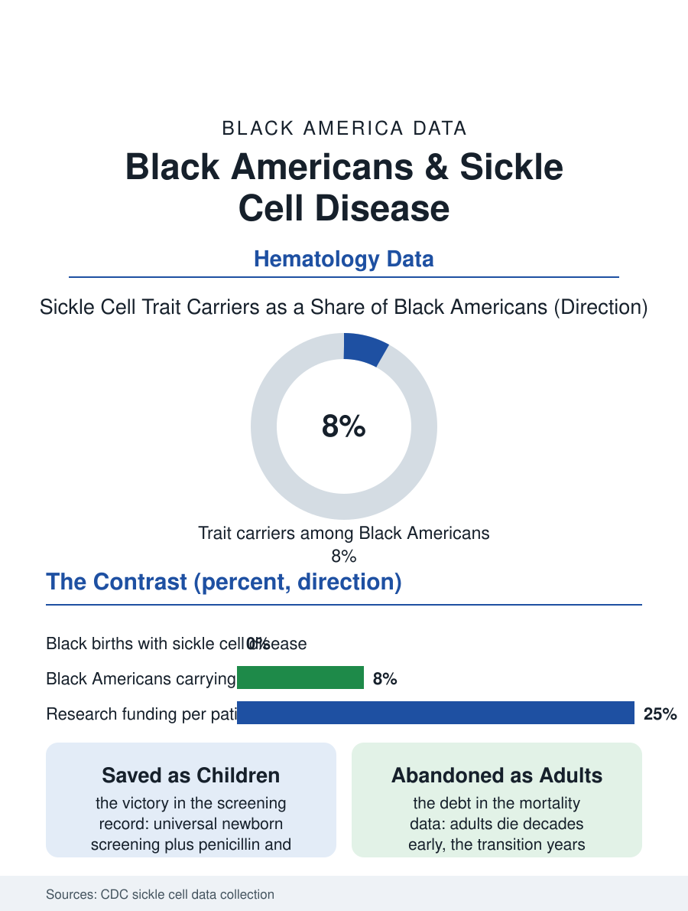

Black Public Health
Saved as Children: Black Americans and Sickle Cell Disease
Newborn screening saves nearly every child with sickle cell disease; the adult system then loses them decades early. The sickle cell file.

Sickle cell disease is the most common serious inherited blood disorder in Black America, affecting roughly one hundred thousand people, about one in every 365 Black births, and its care file is the health section's study in contrasts: a newborn screening triumph, a childhood survival transformation, and an adult care system whose fragmentation the mortality data indict. This article reads the sickle cell file.
The Childhood Success
The screening story deserves its place among public health's victories. Universal newborn screening, adopted state by state and complete nationally by the mid-2000s, catches essentially every American child born with the disease, and the interventions that follow, penicillin prophylaxis in infancy, the vaccine schedule's pneumococcal priority, parental education on fever and spleen monitoring, converted a disease that killed a substantial share of its children before age five into one whose American patients overwhelmingly survive childhood. The comprehensive care centers of the children's hospital network deliver the model the outcomes validate, multidisciplinary teams, stroke screening by transcranial Doppler, hydroxyurea offered early, and the survival curves of the screened cohorts approach the general population's through adolescence. The trait file rides alongside: about one in thirteen Black Americans carries sickle cell trait, clinically benign in nearly all circumstances, with the counseling and military and athletic screening questions the trait's history has generated, the collegiate sports testing regimes adopted after exertional deaths, composing a separate policy file on the line between information and stigma that genetic screening programs everywhere must walk.
The Adult Cliff
The file's crisis is the transition the survival success created. The adults the children's system saved arrive at an adult care system that was never built for them: adult hematologists with sickle cell expertise are scarce, the comprehensive center model thins to a handful of adult programs nationally, and the typical adult patient's care defaults to the emergency department and the hospitalist, the pain crisis managed episodically by clinicians meeting the patient for the first time. The mortality data show the consequence in the starkest form in this section: adults with sickle cell disease die at a median age decades short of the Black population's general figure, and the death rate in the transition years, the late teens and twenties when the pediatric umbrella folds, spikes in the cohort studies. The pain management file compounds the crisis: the vaso-occlusive crisis is among the most severe pain states in medicine, and the opioid era's prescribing crackdowns, applied categorically, have repeatedly swept the sickle cell patient's legitimate regimen into the suspicion machinery, the emergency literature documenting the wait times and the undertreatment that patients describe with a consistency the profession's own surveys corroborate. The new therapies file is the counterweight: the gene therapies approved in the recent regulatory record, curative in intent, priced in the millions, and delivered at a handful of centers, pose the access question in its most extreme form, a cure whose Black patients are essentially its entire market and whose delivery infrastructure reaches a small fraction of them per year.
The Research Ledger
The funding comparison is the file's most cited statistic and its most contested: federal research funding per affected patient for sickle cell disease has run at a fraction of the funding for cystic fibrosis, a disease of comparable severity affecting a third as many Americans, overwhelmingly white, and the philanthropic gap is wider still. The comparison's defenders of the status quo cite the diseases' different scientific tractability; the file's analysts cite the resulting pipeline, sickle cell's therapeutic menu arriving decades after the molecular tools existed, and the recent acceleration, the gene therapy approvals, the new oral agents, as evidence of what the investment level buys when it finally arrives. The community's own institutions, the Sickle Cell Disease Association founded in the disease's era of neglect, the faith-based blood drive networks, the trait education programs of the Black Greek organizations, carried the file through the decades when the establishment's attention was elsewhere. The sickle cell file closes on the newborn screen's promise and the adult system's debt: the country decided, correctly, to find every child with this disease and save them. The data on the adults those children became record the unfinished second half of the decision, in median ages of death that belong to an earlier century of medicine, for the most identifiably Black disease in the American catalog.
More in Black Public Health
Hypertension Among Black Adults: Prevalence, Control, and Consequences
About 55 percent of Black adults have hypertension — the highest rate of any U.S. group. Prevalence, onset, control, and the stroke, heart, and kidney consequences in the data.
Diabetes Among Black Adults: Prevalence and Complications
Nearly one in five Black adults has diabetes, diagnosed or undiagnosed — and its complications fall with particular weight. The CDC data on prevalence, control, and outcomes.
Black Life Expectancy: The Gap at Birth and Its Causes
Black life expectancy at birth is about 73 years, roughly five years below the national figure — the summary measure of every health gap in this section. The CDC data.
Source: Centers for Disease Control and Prevention, Sickle Cell Data Collection program; hematology outcomes and funding literature.